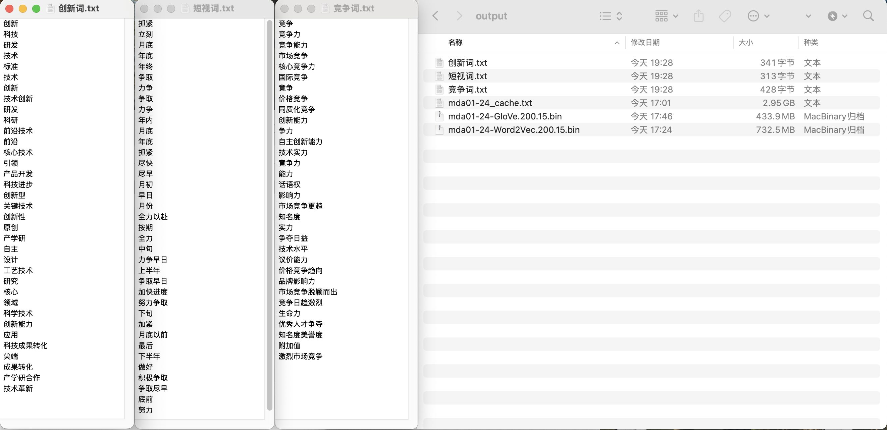

相关内容
- LIST | 社科(经管)文本挖掘文献汇总
- LIST | 文本分析代码汇总
- LIST | 可供社科(经管)领域使用的数据集
- Python实证指标构建与文本分析
- 使用3751w专利申请数据集按年份(按省份)训练词向量
- 预训练模型 | 使用1000w专利摘要训练word2vec模型，可用于开发词典
相关文献
[0]刘景江,郑畅然,洪永淼.机器学习如何赋能管理学研究？——国内外前沿综述和未来展望[J].管理世界,2023,39(09):191-216.
[1]冉雅璇,李志强,刘佳妮,张逸石.大数据时代下社会科学研究方法的拓展——基于词嵌入技术的文本分析的应用[J].南开管理评论:1-27.
[3]胡楠,薛付婧,王昊楠.管理者短视主义影响企业长期投资吗？——基于文本分析和机器学习[J].管理世界,2021,37(05):139-156+11+19-21.
[4]Kai Li, Feng Mai, Rui Shen, Xinyan Yan, Measuring Corporate Culture Using Machine Learning, *The Review of Financial Studies*,2020
一、训练
1.1 导入mda数据
读取 数据集 | 2001-2023年A股上市公司年报&管理层讨论与分析
import pandas as pd
df = pd.read_csv('mda01-23.csv.gz', compression='gzip')
#gz解压后读取csv
#df = pd.read_csv('mda01-23.csv')
print(len(df))
df.head()
Run
60079
1.2 构造语料
从 mda01-23.csv.gz 数据中抽取出所有文本，写入到 mda01-23.txt
with open('mda01-23.txt', 'a+', encoding='utf-8') as f:
text = ''.join(df['text'])
f.write(text)
1.3 配置cntext环境
使用 2.1.4 版本 cntext 库(该版本暂不开源，需付费购买)。 将得到的 cntext-2.1.4-py3-none-any.whl 文件放置于电脑桌面， win系统打开cmd(Mac打开terminal)， 输入如下命令(将工作环境切换至桌面)
cd desktop
个别Win用户如无效，试试cd Desktop 。
继续在cmd (terminal) 中执行如下命令安装cntext2.1.4
pip3 install distinctiveness
pip3 install cntext-2.1.4-py3-none-any.whl
1.4 训练word2vec
设置模型参数配置
- mda01-23 使用2001-2023年度mda数据训练
- 200 嵌入的维度数，即每个词的向量长度是200
- 6 词语上下文的窗口是6
%%time
import cntext as ct
w2v = ct.W2VModel(corpus_file='mda01-23.txt')
#最终模型存储于output/Word2Vec内
w2v.train(vector_size=200, window_size=6, min_count=6, save_dir='Word2Vec')
Run
Building prefix dict from the default dictionary ...
Start Preprocessing Corpus...
Dumping model to file cache /var/folders/y0/4gqxky0s2t94x1c1qhlwr6100000gn/T/jieba.cache
Loading model cost 0.278 seconds.
Prefix dict has been built successfully.
Start Training! This may take a while. Please be patient...
Training word2vec model took 3532 seconds
Note: The Word2Vec model has been saved to output/Word2Vec
CPU times: user 1h 30min 45s, sys: 30.1 s, total: 1h 31min 15s
Wall time: 58min 57s
经过不到两个小时时间， 训练出的中国A股市场词向量模型(如下截图)，词汇量 914058， 模型文件 1.49G。模型可广泛用于经济管理等领域概念(情感)词典的构建或扩展。
- mda01-23.200.6.bin
- mda01-23.200.6.bin.syn1neg.npy
- mda01-23.200.6.bin.wv.vectors.npy

为什么这样确定200和6，可以看这篇 词嵌入技术在社会科学领域进行数据挖掘常见39个FAQ汇总
二、导入模型
使用 ct.load_w2v(w2v_path) 来导入刚刚训练好的模型 mda01-23.200.6.bin
import cntext as ct
#
print(ct.__version__)
#读取模型文件
w2v_model = ct.load_w2v(w2v_path='output/Word2Vec/mda01-23.200.6.bin')
w2v_model
2.1.4
Loading word2vec model...
<gensim.models.word2vec.Word2Vec at 0x310dd9990>
注意
之前购买过 mda01-23.100.6.bin 的可以留意下， gensim.models.word2vec.Word2Vec 和 gensim.models.keyedvectors.KeyedVectors 是有区别的。
三、w2v_model的使用
- 查看词汇量
- 查询某词向量
- 查看多个词的均值向量
更多内容，建议查看下gensim库的文档
#词汇量
len(w2v_model.wv.index_to_key)
Run
1268162
#查询某词的词向量
w2v_model.wv.get_vector('创新')
Run
array([ 2.0061703e+00, -7.5624317e-01, -1.3996853e+00, -5.0943494e-01,
-2.1192348e+00, -2.3715578e-01, -1.0469327e+00, -6.0825008e-01,
1.0559827e+00, -2.6337335e+00, -8.3098280e-01, -2.0414412e+00,
3.2647273e-01, -1.8864768e+00, -6.7964029e-01, -2.0208321e+00,
-2.9305940e+00, -1.8448261e+00, 1.3341883e+00, 2.6361840e+00,
-1.6522094e-03, 1.2229736e+00, -1.4544348e+00, -1.2363178e+00,
2.4998419e-01, 6.2976193e-01, 2.0587335e+00, 7.7435631e-01,
7.0847118e-01, 1.4740779e+00, -1.6444141e+00, -1.0431224e+00,
1.3027675e+00, 2.7307439e+00, -2.3786457e+00, -1.3130645e+00,
6.8786728e-01, -1.7063180e+00, 6.3857561e-01, -1.6260351e+00,
8.4616345e-01, -2.3021619e+00, -1.4227337e-01, 7.8771824e-01,
-9.7587711e-01, 1.6423947e+00, 1.7660189e+00, -5.6713527e-01,
-2.2379627e+00, -2.7953179e+00, 7.5896448e-01, -4.7708002e-01,
3.9780866e-02, 3.5529551e-01, 2.4715779e+00, 1.0366139e+00,
3.2072404e-01, 1.1918426e+00, 2.0091324e+00, 2.0423689e+00,
-3.2471576e-01, 7.5439996e-01, -8.1137431e-01, -3.1240535e+00,
-1.4007915e+00, 1.7590660e+00, 1.1910127e+00, -3.1495863e-01,
-1.8408637e+00, -9.7999334e-01, -7.2268695e-01, -1.5958573e-01,
-8.0736899e-01, -2.0580786e-01, 5.2430385e-01, -1.8948300e+00,
1.9425656e+00, 9.8981924e-02, -3.7227097e-01, -2.5197482e+00,
1.8722156e-01, 1.2897950e+00, -2.1138141e+00, -4.1490741e+00,
6.6944182e-01, 8.8841003e-01, -8.7705368e-01, 8.4536147e-01,
2.9866987e-01, 7.1502768e-02, 1.5150173e-01, -1.2487265e-01,
-8.4192830e-01, -1.3876933e+00, -1.6164522e+00, -2.1918070e+00,
7.5049765e-02, 1.2682813e+00, -1.8965596e+00, -3.3448489e+00,
1.8527710e+00, -9.5269477e-01, 1.1199359e+00, 3.9520876e+00,
-1.5226443e+00, -8.9899087e-01, 3.8167386e+00, 1.9114494e+00,
-1.6151057e-01, -1.3656460e+00, -1.2862095e+00, 7.7550404e-02,
5.4423016e-01, -1.5958691e+00, 1.5186726e+00, 7.5659829e-01,
1.6397550e+00, -1.0501801e+00, 2.0697882e+00, 3.4903901e+00,
-6.6988021e-01, -1.5313666e+00, 7.4480243e-02, -5.1057938e-02,
3.9610174e-01, -1.6156559e+00, -9.9163389e-01, -2.3379476e+00,
-1.2561744e+00, 2.4532168e+00, -4.4737798e-01, 7.0193654e-01,
-1.0229303e+00, 2.1379066e+00, -3.1052154e-01, -3.2027736e-01,
-5.5717267e-02, -5.4335070e-01, 2.1057355e+00, -1.4081483e+00,
-2.9625890e-01, 3.5636108e+00, 1.6618627e+00, -1.4326172e+00,
3.7079006e-01, -9.4542742e-02, -1.2751147e+00, 9.9195182e-01,
-3.0635363e-01, 5.6906539e-01, 2.0860300e+00, 6.3169920e-01,
-4.7988534e-02, -7.8025639e-01, 1.2906117e+00, -2.3830981e+00,
1.3253988e-01, -1.2864060e+00, 4.9821786e-03, 3.5779157e-01,
-9.0931761e-01, 4.0924022e-01, 2.3946068e+00, -2.0449016e+00,
-3.1895530e+00, -6.2343496e-01, -2.2672276e+00, 4.0120354e-01,
6.6080755e-01, 2.1412694e+00, 1.6714897e+00, -2.7443561e-01,
1.0102105e+00, -9.0470135e-01, 2.4389675e-01, 1.3083955e+00,
6.2089604e-01, 1.1761054e+00, 3.2139707e+00, 2.1401331e+00,
2.9888725e+00, -1.2490459e-01, 2.9847507e+00, -7.8840727e-01,
-5.2520728e-01, -5.4571289e-01, -4.7277856e-01, 2.1406946e+00,
3.3333063e+00, 2.8909416e+00, 2.0044851e+00, 2.3887587e-01,
-1.0897971e+00, 7.6192236e-01, -8.1400484e-01, 6.9058740e-01,
1.6329724e+00, -1.3318574e+00, -1.0891541e-01, 4.1473702e-01],
dtype=float32)
#查询多个词的词向量
w2v_model.wv.get_mean_vector(['创新', '研发'])
Ruj
array([ 0.06965836, 0.00315241, -0.05779138, -0.04039053, -0.06981122,
-0.00599566, 0.00519131, 0.00618964, 0.00922295, -0.09598336,
0.00321158, -0.01436742, -0.00021783, -0.06856406, -0.00658061,
-0.0455833 , -0.11682363, -0.08916132, 0.05608616, 0.07702765,
0.03827055, 0.01977586, -0.03501461, -0.0921019 , 0.08991239,
0.00136941, 0.13192363, 0.0146284 , 0.07642476, 0.0339537 ,
-0.07868544, -0.03777661, 0.05991726, 0.0855544 , -0.06954425,
0.00998873, 0.04286281, -0.09743309, 0.01956445, -0.06347939,
0.01470151, -0.1092098 , -0.00790439, 0.02191022, 0.00776696,
0.15425815, 0.0758743 , 0.05703073, -0.09397265, -0.06609394,
0.03145685, 0.01300637, 0.01394638, 0.02340477, 0.04559586,
0.04102872, 0.03425206, 0.00024072, 0.09367524, 0.05709908,
-0.02487722, 0.03930294, -0.01406444, -0.16937086, -0.13780443,
0.08644196, 0.11982834, -0.01221577, -0.04754106, -0.04081532,
-0.05585349, -0.01468118, -0.07774962, -0.01348679, 0.04189138,
-0.06839944, 0.050496 , 0.013173 , 0.01711268, -0.07005601,
0.09505412, 0.08152292, -0.06771114, -0.13916653, 0.06306884,
0.04447467, -0.03872044, -0.04182331, 0.00963773, -0.0008154 ,
-0.02648942, 0.02538633, -0.02428493, -0.0367038 , -0.02652043,
-0.01066429, -0.0512585 , 0.07111567, -0.07910167, -0.14075056,
0.09447317, -0.06416138, 0.01625183, 0.11519565, -0.02005424,
-0.06200746, 0.15829347, 0.02597752, -0.02700011, 0.00574114,
-0.01110603, 0.02687638, 0.03469303, -0.05248028, 0.0870206 ,
0.00077715, 0.05809092, -0.01383492, 0.09590432, 0.10648903,
0.03396901, -0.03575124, 0.03355333, -0.01877551, 0.01351267,
-0.08261327, -0.01916262, -0.10389806, -0.04084764, 0.0760856 ,
-0.01533336, 0.02277224, -0.05204159, 0.05793417, -0.01381126,
-0.02089536, 0.00811556, 0.03262435, 0.04531128, -0.03010069,
-0.01171639, 0.11563395, 0.02414452, -0.07918232, -0.03051105,
0.02917325, -0.07373993, 0.02146403, -0.00288346, -0.03545145,
0.04871619, -0.00696709, -0.04127839, -0.03021095, 0.02486127,
-0.09704249, -0.00212691, -0.07545952, -0.04577727, 0.03115453,
-0.02307166, 0.01308232, 0.05850307, -0.11189032, -0.10513283,
-0.02408416, -0.05981093, 0.03213454, -0.0140616 , 0.01734342,
0.07199937, 0.01248292, 0.05972538, -0.04061089, 0.01433882,
0.08300181, -0.02776613, 0.08434992, 0.07857168, 0.04623952,
0.06063098, -0.06632672, 0.13141835, -0.04028555, -0.02711887,
-0.03171489, -0.00121487, 0.06289804, 0.14847729, 0.11676435,
0.09777641, 0.01878174, -0.04769752, 0.02091297, -0.05527892,
0.02009225, 0.00415907, -0.01899581, -0.02441722, 0.01018429],
dtype=float32)
有了每个词或者概念的向量，可以结合cntext旧版本单语言模型内的态度偏见的度量。
四、扩展词典
做词典法的文本分析，最重要的是有自己的领域词典。之前受限于技术难度，文科生的我也一直在用形容词的通用情感词典。现在依托word2vec技术， 可以加速人工构建的准确率和效率。
下面是在 mda01-23.200.6.bin 上做的词典扩展测试，函数 ct.expand_dictionary(wv, seeddict, topn=100, save_dir=‘Word2Vec’) 会根据种子词选取最准确的topn个词。
- wv 预训练模型，数据类型为 gensim.models.keyedvectors.KeyedVectors。
- seeddict 参数类似于种子词；格式为PYTHON字典；
- topn 返回topn个语义最接近seeddict的词，默认100.
- save_dir 模型存储到某个位置，默认’Word2Vec'.
假设现在有种子词seeddicts， 内含我构建的 短视词、 创新词、 竞争词， 我希望生成最终各含 30 个词的候选词表txt文件。
可以使用 ct.expand_dictionary 进行如下操作
seeddicts = {
'短视词': ['抓紧', '立刻', '月底', '年底', '年终', '争取', '力争'],
'创新词': ['创新', '科技', '研发', '技术', '标准'],
'竞争词': ['竞争', '竞争力'],
}
ct.expand_dictionary(wv = w2v_model.wv,
seeddict = seeddicts,
topn=30)

六、获取模型
内容创作不易， 本文为付费内容，
- 100元 cntext-2.1.4-py3-none-any.whl
- 100元 Word2Vec相关模型文件(mda01-23.200.6.bin)
- 200元
- cntext-2.1.4-py3-none-any.whl
- Word2Vec相关模型文件(mda01-23.200.6.bin)
声明： 仅供科研使用
加微信 372335839， 备注「姓名-学校-专业-word2vec」